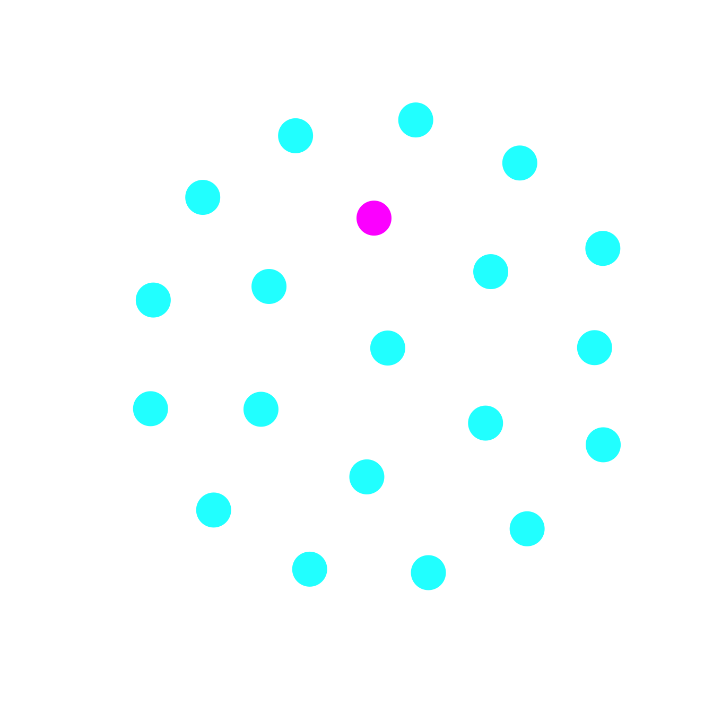
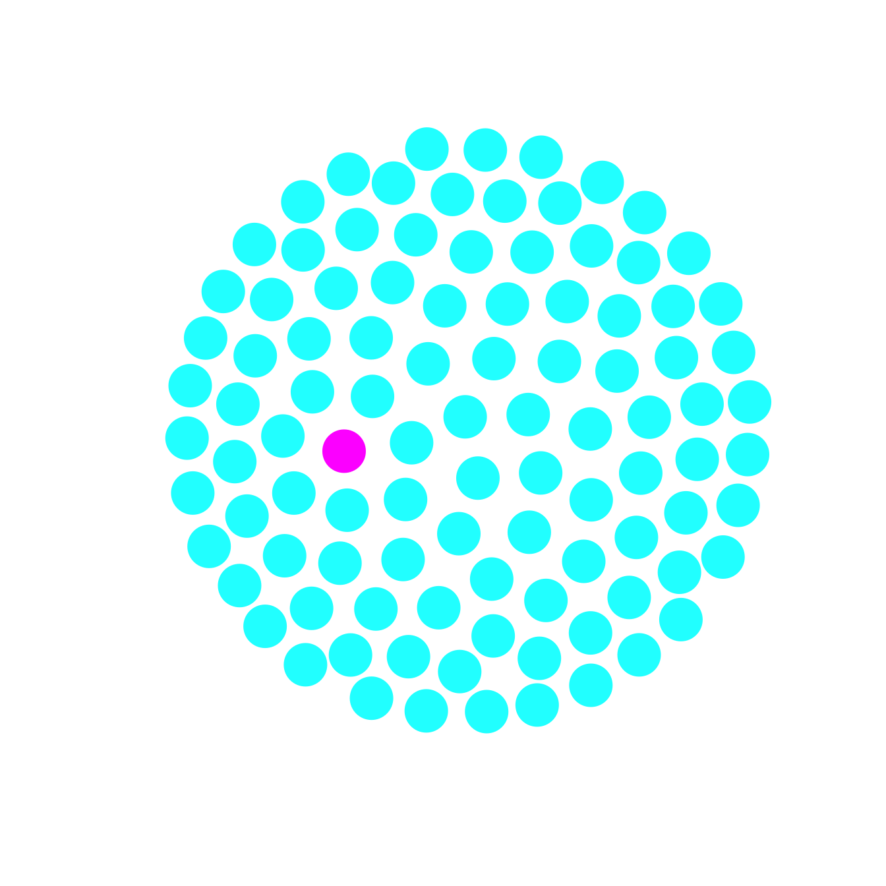

x <- seq(0,5,length=1000)
r <- 0.75
## classic concave function
fx <- 1-exp(-r*x)
## for part deux
aaa <- (fx-0.4882412)^2
#which(aaa==min(aaa))
#[1] 179
plot(x,fx, type="l", lwd=3, axes=FALSE, frame=TRUE,
xlab=expression(x), ylab=expression(U(x)),
xaxs="i", yaxs="i", xlim=c(-0.1,5.1), ylim=c(0,1))
#segments(0,0,5,fx[1000], lwd=2, col=grey(0.75))
axis(1, at=c(0,2.5,5), labels=c(expression(x[0]), expression(bar(x)),
expression(x[1])), tick=FALSE)5 Risk, Uncertainty, and Decision-Making
5.1 Utility
A utility function is simply a mechanism for ordering preferences. I prefer choice \(A\) over choice \(B\) only if \(U(A) > U(B)\). Utility functions are increasing: more stuff means more utility. Mathematically, this means that the first derivative of a utility function is greater than zero, \(U'(x) > 0\). They often show diminishing marginal utility, which mathematically means that the second derivative is less than zero, \(U''(x) < 0\). Debreu showed that all that is required for a valid utility function are two things: (1) complete ordering, and (2) transitive preferences. A transitive preference means that if I prefer \(A\) to \(B\) and \(B\) to \(C\), I prefer \(A\) to \(C\).
We can draw a utility function that has the two key properties of \(U'(x)>1\) and \(U''(x)<0\).
5.2 Expected Utility
What happens when payoffs are variable? A lottery is just a choice that has a variable outcome. To value/rank lotteries, we need to combine possible outcomes of the lotteries with weights that we assign to those outcomes. The simplest way to do this is to use a linear combination of the utilities of outcomes and the probabilities of those outcomes. This particular operationalization of measures and weights is known as expected utility and is the foundation for most choice theory.
Here we can plot two lotteries as trees using the ape package in R. Pictured are two different lotteries, one low-risk/low-gain and the other high-risk/high-gain. This might represent the sort of foraging decision faced by a Martu hunter in deciding whether to hunt for goanna (lottery A) or hill kangaroo (lottery B) (James Holland Jones, Bird, and Bird 2013).
library(ape)
## two lotteries in nexus format
ttt <- "(20,30);"
ttt <- read.tree(text = ttt)
ttt1 <- "(0,100);"
ttt1 <- read.tree(text = ttt1)
lablocs <- list(x=c(0.45, 0.45), y=c(1.9, 1.1))
#
par(mfrow=c(1,2))
plot(ttt, type="cladogram", edge.width=3, label.offset=0.05)
text(lablocs, c(expression(p),expression(1-p)), cex=1.25, family="sans")
title("A: Low-Risk/Low-Gain")
plot(ttt1, type="cladogram", edge.width=3, label.offset=0.05)
text(lablocs, c(expression(p),expression(1-p)), cex=1.25, family="sans")
title("B: High-Risk/High-Gain")Expected utility theory (EUT) has axiomatic foundations and constitutes on the core ideas of the so-called “Rational-Choice” paradigm. The first axiomatization was by Neumann and Morgenstern (1947). Their approach lays out four axioms, which are broadly similar to subsequent axiomatizations:
- Completeness: all possible decisions can be assigned a value
- Transitivity: if \(A > B\) and \(B > C\), then \(A > C\)
- Continuity: there exists a \(p\) such that if \(A > B\) and \(B > C\), \(B < pA + (1-p)C\)
- Independence: preferences not altered by irrelevant alternatives
As noted by Gintis (2007) rationality, in the rational-choice sense, is really about consistency. While it is sometimes framed as focusing on self-regarding behavior, this is not necessarily true. An indidividual can have other-regarding preferences and still be “rational” as long as they are consistent in their preferences.
Given the above axioms, making decisions by expected utility will produce consistent, coherent preferences. Therefore, the theory of decision-making under risk takes as its objective function expected utility. Remember that mathematically, the word “expected” is synonymous with “average”. Suppose that there is some variable resource, the acquisition of which is associated with some utility. Following standard statistical convention, we denote our random variable (i.e., the resource in question) using uppercase Roman letter, \(X\), and denote specific realizations of this random variable in lowercase, \(x\). Expected utility is simply the average of the utilities \(u(x)\) associated with each value of \(x\):
\[ E(u) = \int_{\Omega} u(x)\, f(x) dx, \]
where \(E()\) indicates mathematical expectation (i.e., the arithmetic mean), \(f(x)\) is the probability density of outcome \(x\), \(\Omega\) is the set of all possible outcomes being averaged over. The limits of \(\Omega\) are based on the specifics of the problem but are defined such that \(f(x)\) is a true probability distribution – i.e., \(\int_{\Omega} f(x)dx = 1\).
5.2.1 An Approximation
We often don’t know the full probability distribution \(f(x)\). Perhaps more importantly, this formula for the expected utility doesn’t provide us with any analytical insights that help us develop intuition about how features of the environment are likely to affect preferences. To help us develop such intuition, we do the thing that one (almost) always does in such a situation: we perform a Taylor series expansion!
We will use \(\bar{x}\), the mean reward as the paint around which we expand expected utility. The Taylor series expansion around the mean reward looks something like this (at least for the first three terms):
\[ u(x) = u(\bar{x}) + u' (x - \bar{x}) + \frac{1}{2} u'' (x - \bar{x})^2 + \frac{1}{6} u''' (x - \bar{x})^3 + \ldots \]
We will focus on the first two terms, and take expectations of both sides of the equation, yielding:
\[ \overline{u(x)} \approx u(\bar{x}) + \frac{1}{2} u''\, \operatorname{Var}(x) \]
This result follows from the following two definitions:
- The expected value of \((x-\bar{x})\) is zero since \(E(x-\bar{x}) = \bar{x}-\bar{x}=0\).
- \(E(x - \bar{x})^2)\) is, by definition, equal to the variance of \(X\)
Now let’s think about this result a bit. The second derivative is simply a measure of the curvature of the utility function. In this case, it is the curvature in a very particular point, namely, in the vicinity of the average environment \(\bar{x}\). In the figure below, this is the point where the dashed grey lines converge on the function. If we look to the left side of this point, we see that the curvature is far steeper than on the right side of the point. This means that as we get larger and larger values, the gain in utility, while still positive (more is generally better), the increment by which it increases gets less. We call this situation diminishing marginal utility. In this context, the term “marginal” simply means the next increment. The term marginal is generally used to mean the derivative, or the local rate of change in the slope of a function. When marginal utility is diminishing, it means that the utility curve bends downward. From elementary calculus, we can say that such a curve has a negative second derivative. Inspecting our equation above, we can see that when \(u''<0\), variance in \(x\) will reduce the expected utility from the utility of the average \(x\).
plot(x,fx, type="n", lwd=3, axes=FALSE, frame=TRUE,
xlab=expression(x), ylab=expression(U(x)),
xaxs="i", yaxs="i", xlim=c(-0.1,5.1), ylim=c(0,1))
#segments(0,0,5,fx[1000], lwd=2, col=grey(0.75))
axis(1, at=c(0,2.5,5), labels=c(expression(x[0]), expression(bar(x)),
expression(x[1])), tick=FALSE)
segments(2.5,0,2.5,0.846645, lwd=3, lty=1, col=grey(0.65))
segments(2.5,0.846645,0,0.846645, lwd=3, lty=1, col="red")
arrows(0,0.846645,0,0.01, lwd=3, lty=1, col="red", length=.25,angle=10)
segments(2.5,0.846645,5,0.846645, lwd=3, lty=1, col="red")
arrows(5,0.846645,5,fx[1000], lwd=3, lty=1, col="red", length=.25,angle=10)
lines(x,fx, lwd=3, col="black")
The fundamental insight provided by our Taylor series analysis of expected utility is that when there is diminishing marginal utility, variance is bad for the decision-maker. This is because in such a case \(u''<0\) so the second term in the equation is subtracted from the utility of the mean. Of course, if marginal utility increases, then \(u''>0\) and the second term is positive. When there is increasing marginal utility, people are variance loving or risk prone.
We can explore in more detail what diminishing marginal utility means for decision-making. To do this, we will first simplify the system a bit. Assume that we are at a value of our resource \(\bar{x}\). We now have to make a decision of whether to take a risk and try to increase our utility or remain where we are. Such a choice is often referred to as a lottery. The decision is risky because we assume that there is an equal probability that we will either succeed. If we succeed our payoff is \(x+1\) but if we fail, our payoff is \(x-1\). We can depict this situation graphically as in the figure below. The benefit associated with “winning” the lottery (i.e., scoring a return of \(x_1\)) is much smaller than the risk associated with losing (i.e., scoring return \(x_0\)). The implication of this is that the individual is risk-averse. That is, the would prefer not to take the gamble for the larger payoff if they did not have to. In fact, risk-averse agents should be willing to pay a price for certainty. The difference between the expected utility and the value that risk-averse agents are willing to pay for certainty is the so-called “certainty premium.”
plot(x,fx, type="n", lwd=3, axes=FALSE, frame=TRUE,
xlab=expression(x), ylab="",
xaxs="i", yaxs="i", xlim=c(0,5.1), ylim=c(0,1))
segments(0,0,5,fx[1000], lwd=3, col=grey(0.75))
axis(1, at=c(0.05,x[179],2.5,5), labels=c(expression(x[0]), expression(x[C]),
expression(bar(x)), expression(x[1])),
tick=FALSE)
mtext(expression(U(x)), side=2,line=2, adj=0.65)
par(las=2)
axis(2, at=0.4882412, labels="", tick=FALSE)
segments(2.5,0,2.5,0.4882412,lwd=3, lty=1, col="red") # vertical line at bar(x)
segments(2.5,0.4882412,x[179],0.4882412,lwd=3, lty=1, col="red") # horizontal line back to utility curve
segments(x[179],0.4882412,x[179],0, lwd=3, lty=1, col="green") # vertical line to x_c
lines(x,fx, lwd=3, col="black")
text(0.35, 0.54, expression(pi==bar(x) - x[C]))To find the certain payoff that the risk-averse individual would be willing to accept in lieu of the average (risky) payoff \(\bar{x}\), we draw a chord connecting the points of the utility curve at \(x_0\) and \(x_1\). Because our lottery is a 50/50 chance of winning or losing, the expected value (i.e., average) is the midpoint of this chord. From this point we move horizontally to the left until we hit the utility curve (note that moving horizontally means that we are holding utility constant!). This is the certain utility the individual is willing to receive in lieu of the risky mean. Drawing a line segment down to the x-axis gives us the value of \(x\), which we call \(x_C\).
5.2.2 Arrow-Pratt Index of Risk-Aversion
This figure suggests that the more concave (i.e., the more curved) the utility curve is, the more risk-averse the individual will be. We move back further from the utility of the mean to the utility curve when the function is more curved. For a linear utility function – i.e., one with no curve – the points are identical and the person is risk-neutral. The upside gain and downside risk are equal. We can measure the extent of a person’s risk aversion by measuring the curvature of her utility curve. Of course, this is a big “if.” In general, utility curves are theoretical constructs that give us insight into behavior, though this need not be the case (see J. H. Jones and Bliege Bird 2014) for an empirical measurement of a human fitness curve as a function of parity). How does we measure the curvature of a function? We can use calculus, where the second derivative of a function is a measure of local curvature. For our utility curves with diminishing marginal utility, we can see that toward the middle of \(x\) (i.e., near \(\bar{x}\), the function \(u(x)\) has a high degree of curvature whereas at the upper-end of the range of \(x\), it is quite flat. Arrow (1965) used this observation to note that wealthy people tend to be less risk-averse on the margin. A wealthy person is willing to take a financial gamble like a chimpanzee sated on fruit is willing to take a risk hunting red colobus monkeys.
Since the degree of risk-aversion, as measured by the certainty premium, depends on the degree of curvature of the fitness function. This suggests that a measure of risk using second derivatives of \(u(x)\) might be in order. This is exactly what the Arrow-Pratt measure of risk-aversion does. The Arrow-Pratt metric measures the curvature of \(u(x)\) (through the second derivative, \(u''(x)\)) and scales this by the first derivative, \(u'(x)\). Scaling by the first derivative removes the effect of any multiplicative constant on the fitness function (since both the first and second derivatives will contain this constant).
The so-called Arrow-Pratt Index of Absolute Risk Aversion is:
\[ R_A(x) = -\frac{u''(x)}{u'(x)}. \]
A related measure is known as the index of relative risk aversion:
\[ R_R(x) = -\frac{x u''(x)}{u'(x)}. \]
Another way to think about the relative risk aversion is that it is an elasticity of the marginal utility. Elasticities measure the proportionate change in a quantity for some small change in an input. For example, by what percentage does mean fitness change if we improve juvenile survivorship by 10%? How much does garden production increase if we increase irrigation by 2%? Define an elasticity \(e(w[x])\) as
\[ e(u[x]) = \frac{d \log u}{d \log x} = \frac{du}{dx} \frac{x}{u}. \]
It is not difficult to see that, in fact,
\[ R_R(x) = -e(u'(x)). \]
That is, how does marginal utility of a resource – such as food energy – change with an increase in energy availability? If this number is high, people are highly risk averse and should be willing to pay a premium for certainty.
We can derive an analytical approximation for the certainty premium. Since the risk premium is difference between expected utility and risk-free utility, we can approximate \(\pi\) by equating respective Taylor series approximations for two functions. It is conventional to employ the second-order Taylor series approximation for expected utility derived for expected utility but to use a first-order Taylor series approximation of the risk-free utility. This bit of mathematical trickery allows us to write a simple formulation for \(\pi\), but is limited in its applicability to small gambles.
Assume a small gamble where your final wealth is \(x + \epsilon\), where \(\epsilon\) is a random variable with zero mean and variance \(\sigma^2\). Since you would rather take the certainty equivalent to the gamble because you are risk averse, forcing you to take the gamble is effectively the equivalent of of subtracting \(\pi\) from your wealth. This sets up the following equivalence:
\[ E\left[ u(x+\epsilon)\right] = u(x-\pi). \]
We then perform a second-order Talor expansion of the left side and a first-order Taylor expansion of the right-hand side:
\[ E\left[ u(x) + \epsilon u'(x) + (\epsilon^2/2)u''(x) \right] = u(x) - \pi u'(x). \]
Again, the \(E(\epsilon)=0\) and \(E(\epsilon^2) = \operatorname{Var}(x)\). Note also that \(-u''(x)/u'(x) = A_u(x)\), the Arrow-Pratt index of absolute risk aversion. Rearranging (and reminding ourselves this is only true for small gambles), we get
\[ \pi \approx \frac{\sigma^2}{2} A_u(x). \]
This says that, for small gambles, the amount that a risk-averse agent is willing to pay for certainty is proportional to the curvature of her utility curve and the degree of variability, measured by the variance of the resource.
So far, all the examples of utility curves have had the same concavity throughout the range of resource values. We have seen that concave utility curves imply risk-aversion. However, there are certainly conditions in which we should expect people to be risk-prone. For example, at very low levels of resource holding (extreme destitution or near-starvation), people might be willing to take a risk to get a reward since, in effect, they have nothing to lose, but then at more average levels of resource holding, people become risk-averse. This is an insight applied in the classic paper by Friedman and Savage (1948) to suggest the origins of middle-class sensibilities. This insight has been applied more recently in an anthropological context by L. Kuznar (2002) and L. A. Kuznar and Frederick (2003).
x <- seq(10,30,length=1000)
# logistic function
ux <- expression(1/(1+exp(-(x-a)/b)))
a <- 20
b <- 2
plot(x,eval(ux), type="l", lwd=3, axes=FALSE, frame=TRUE, yaxs="i",
ylim=c(0,1), xaxs="i",
xlab=expression(x), ylab=expression(U(x)))The results of Milner-Gulland and colleagues (1996) provide an excellent demonstration of the relationship to risk changing with wealth in an apparently sigmoid manner. Farmers nearest destitution welcomed the high-variance crop (maize) since scoring a bumper crop of maize was their only chance of raising themselves out of destitution. As farmers become richer, they switch over to millet, despite its lower potential yields. Wealthy farmers do not like variance since they are risk-averse. In contrast, the destitute farmers welcome variance – they have convex utility. Their only hope of emerging from destitution is to get lucky with the rains and score a bumper crop of maize.
5.3 Time Discounting
Discounting is a way of determining preferences. A risk-averse decision-maker might prefer a smaller certain reward to a risky reward with a greater expected value. How does she feel about taking a reward now versus delaying some time \(\tau\)?
5.3.1 Reproductive Value
We will start with a concept introduced by Fisher called reproductive value. Reproductive value measures the contribution of an individual age \(x\) to the population in the distant future. This probably sounds oddly specific, but it turns out to be really important evolutionarily. Another way to think about reproductive value is that it measures the net present value of all future reproduction.
First, a couple definitions. We will be using an age-structured population. This is a population where the vital rates (i.e., fertility and survival) change with age—you know, like humans? We also assume that these vital rates remain constant in time. We will denote age as \(x\). The life-table survivorship, \(l(x)\) is the fraction of individuals surviving to exact age \(x\). By definition, \(l(0)=1\). That is everyone is alive when they are born. At some future age, everyone is dead \(l(\infty)=0\). Survivorship cannot increase with age. It is a cumulative measure of survival. The age-specific fertility rate (ASFR) is denoted \(m(x)\) (historically the m was for “maternity”). It is also useful to define the age-specific net reproduction rate, which is simply the product of survivorship and ASFR: \(\phi(x) = l(x) m(x)\).
We first consider the case of a stationary population. A population is stationary if it does not change in size. Births exactly match deaths and the population growth rate is zero. In a stationary population, the expected number of future offspring of a newborn individual is the sum of net of the net reproduction rate at each age. In continuous time, this sum is an integral:
\[ 1 = \int_0^{\infty} l(x) m(x) dx.\]
The summed contributions of each age totals to one. Each individual replaces herself exactly. This makes it clear that \(\phi(x) = l(x) m(x)\) represents the fraction that individuals age \(x\) contribute to total reproduction.
Now consider reproductive value of ages beyond birth. An individual of age \(a\) survives to age \(x\) with a probability \(l(x)/l(a).\)
The expected number of future offspring produced by an individual of age \(a\) is the integral starting at age \(a\) rather than birth, normalized by the probability of actually surviving to \(a\).
\[ v(a) = \int_{a}^{\infty} \frac{l(x)}{l(a)} m(x) dx = \frac{1}{l(a)} \int_{a}^{\infty} l(x) m(x) dx. \]
We call this the reproductive value at age \(a\). Note that \(v(0)=1\), since \(l(0)=1\). Note also that \(v(a)\) can increase up to age at first reproduction (AFR) since \(1 \geq l(a) \geq 0\). After AFR, it will decrease monotonically.
Now we consider the more general case of nonstationarity, i.e., where births do not exactly balance out deaths. In this case, the population can increase of decline. If, on average, a population has a negative growth rate, this means it will go extinct, so we typically think about populations with positive growth rates. We will denote the instantaneous growth rate of the population as \(r\). This growth rate is the difference between the gross birth rate and the gross death rate. If \(r>0\), then the population increases over time. While they change with age, we have assumed that our vital rates remain constant over time. Because the input rates remain constant, this means that the growth rate also remains constant. A constant growth rate in a continuous-time model implies exponential growth. This arises because in the limit (i.e., as the time step in which we account for the population goes to zero), population size at time \(y\) is the solution to the equation \(dN/dx = rN\) which is \(e^{rx}\) times the initial population size.
In a growing population, offspring born sooner constitute a larger fraction of the population. An offspring born into a population at time \(a\) represents \(1/N(a)\) of the population – remember, we are interested in an individual of age \(a\)’s contribution to the population. In an population growing exponentially at rate \(r\), the size of the population \(x\) years in the future will be \(e^{rx}\) times bigger than it is in the present. Thus, because the population is growing exponentially, an offspring born at time \(x>a\) must be discounted by a factor of \(e^{-rx}\) (i.e., we divide the the factor by which the population has increased).
A simple way to visualize.
require(igraph)
aaa <- graph.empty(20)
bbb <- graph.empty(100)
vc20 <- rep("cyan",20)
vc20[7] <- "magenta"
vc100 <- c(vc20,rep("cyan",80))
# reproducing in a smaller population
plot(aaa, vertex.color=vc20, vertex.frame.color=vc20,vertex.label=NA)
# reproducing in a larger population
plot(bbb, vertex.color=vc100, vertex.frame.color=vc100,vertex.label=NA)
We can now incorporate this information into the equation for reproductive value. To obtain the reproductive value at age \(a\), we need to sum all the above terms from age \(a\) to the maximum age \(\omega\) (or alternatively, \(\infty\)). The calculation of reproductive value at age \(a\) thus requires that we integrate across all expected future offspring starting at age \(x\) and divide by the probability of surviving to age \(a\) (as before). The only thing that is different is that we have to discount according to the population growth rate \(r\) and the delay \(x - a\). Putting this all together, we get:
\[ v(a) = \int_{a}^{\infty} e^{-r(x - a)} \frac{l(x)}{l(a)} m(x) dx \]
With a little algebra (basically taking everything that doesn’t depend on \(x\) outside of the integral), we will get the form for reproductive value that Fisher first introduced in 1930 and which we usually encounter in the literature:
\[ v(a) = \frac{e^{ra}}{l(a)} \int_{a}^{\infty} e^{-rx} l(x) m(x) dx. \]
What does this have to do with time preferences? Just as in the stationary case, we can think of the expression in the integral as the contribution to total reproductive value by each age \(x\). The obvious difference now is that the net reproduction at each age is multiplied by a discount factor \(e^{-rx}\), which accounts for the fact that the population is growing at a constant rate \(r\). At birth, \(x=0\), this discount factor is equal to one, since \(e^0=1\). We also know that \(e^{-rx} \rightarrow 0\) as \(x\) goes to infinity.
What this means is that, all things being equal, it’s better for fitness to reproduce early in life than it is late in life. In a growing population, when you reproduce early, your relative contribution to the total population is greater. The longer you wait to reproduce, the larger the population becomes, and the less your relative contribution will be. This is the essence of temporal discounting: you prefer to do something in the present because it is, for some reason, more valuable now than it is later. If you choose to delay, the reward that you receive in the future will need to be much bigger than it would be now.
5.3.2 Temporal Discounting in Economic Models
Unless you are a biologist or possibly a demographer, most applications of discounting involve economic choices. In the economic domain, we are asking the question of whether we would prefer to consume now or delay until some future time. In the demographic/evolutionary context, there was a clear reason why early reproduction is preferred: the delaying reproduction means that the population will grow in the interim and your contribution to the total population will be relatively smaller. Remarkably, it’s not as clear why time preferences exist in economic decision-making. Some early authors early authors such as Bohm-Bawerk and Fisher (different guy) were naturally impatient because of a lack of imagination. John Rae, in his The Sociological Theory of Capital suggested that mortality may actually drive time preferences. If you delay your consumption from now to some time in the future, there is a chance that you might die and be unable to enjoy the consumption you have foregone.
One possibility, of course, is that time preferences arise because of opportunity costs. If you receive a payment today, rather than waiting for some future payout, you could put that payment into an interest-bearing account of some sort and its value could grow. This makes it very similar to the logic of reproductive value. The major problem with this interpretation is that interest-bearing accounts are a (very) recent invention in human history, yet people seem to universally express time preferences. Risk as expressed over time — i.e., a hazard — seems like the best explanation. There is a risk you might die or that the person with whom you’ve agreed to some delayed payment might die or that there might be a catastrophe and the payment will become valueless for some reason or … There are lots of reasons why you might worry about the value of a future payoff. Sophisticated, evolutionary-minded scholars have weighed in on the foundations and consequences of discount rates (Rogers 1994; Sozou 1998; Sozou and Seymour 2003).
Regardless of why we discount future consumption, there is near-universal agreement that time preferences are important for economic-choice problems. Varian (1992) noted succinctly that goods simply need to “be distinguished by any characteristic that agents care about,” which includes when they are available.
The simplest way to think about economic discounting is a two-period model of total utility. You utility is the sum of the utility of your consumption now and the utility of your consumption in the future time period, discounted to account for the delay.
\[ U_0 = u(x_0) + D_1 u(x_1). \]
We write the total utility as \(U_0\) to indicate that this is the total utility starting at time zero. We call \(D_1 \le 1\) a discount factor. Depending on the level of generality, this can be a function, it can be a specific value for the time period, or it can be constant. In the classic approach first laid out by Samuelson (1937) and axiomatized by Koopmans (1960), the discount rate is constant. In continuous time, this leads to exponential discounting. This exponential discounting has since become a key element of the rational-choice/expected-utility framework that dominates the economic theory of choice, as only exponential discounting is consistent with the features deemed important for establishing time preferences, namely, certainty, stationarity, and time consistency. Certainty means that discounts are guaranteed for every time interval greater than zero. Stationarity means that the discount function is independent of the time in which it is applied. Time consistency means that the discount function is consistent across a time interval regardless of when that time interval occurs (i.e., a one-period delay is discounted at the same rate if it starts today or starts a year from now).
The frequent way that intertemporal preferences enter scholarship focused on human ecology and adpation is studying consumption streams over a lifetime or across generations (e.g., Dasgupta 2008). This is just a series of levels of consumption over time. The total utility or present value of a consumption stream is
\[ U_0 = \sum_0^T u(x_t)/(1+\delta)^t. \]
Here \(U_0\) indicates that this is the total utility starting at time zero, \(x_0, x_1, \ldots, x_T\) is the consumption stream to maximum time \(T\) (which may be \(T=\infty\)), and \(\delta\) is the discount rate. The discount factor at some time \(t\) is \(1/(1+\delta)^t\), which is the discrete-time equivalent of \(e^{-\delta t}\) (so certainty, stationarity, and time consistency are fulfilled).
This model is also said to be separable, which simply means that the utilities at any given time point do not depend on either past or present utilities. Incidentally, if our total utility is the sum of all of a group’s (e.g., a society, a generation) individual utilities (as it often is in applications), there is another big assumption built in. In particular, it assumes that the individual units (people, households) derive no utility from the consumption of other units. We can say that there are no consumption externalities (Acemoglu 2009). This is a major individualist assumption that may not be appropriate for some social systems.
5.3.3 Non-Constant Discounting
Exponential discounting (i.e., discounting at a constant rate in continuous time) provides a way to discount future consumption that satisfies stationarity, and time consistency. That doesn’t mean that this is how people actually express their time preferences.
In particular, people’s actual time-preferences are frequently not constant in time, but are characterized by two key features. First, is a present bias (PB) that causes very steep (i.e., faster than exponential) initial discounting. People often really prefer the immediate to even a brief waiting period. Second, is a flattening of discounting for longer time periods, known as diminishing impatience (DI). Taken together, these characteristics are often described as hyperbolic discounting because the qualitatively resemble of hyperbolic curve (Ainslie 1975; Loewenstein and Prelec 1992; Laibson 1997). Such time preferences are inconsistent in the sense that two curves are likely to cross, leading to preference reversals. Hyperbolic-like time preferences are frequently interpreted as problems in self-control (Ainslie 1975; O’Donoghue and Rabin 1999).
Here, we can compare hyperbolic and exponential discount curves. While the hyperbolic curve decays much faster to start, it levels out as time gets more remote from the present.
t <- seq(0,10,length=100)
hyperf <- expression(1/(1+t))
expf <- expression(2^-t)
plot(t,eval(hyperf), type="l", col="red", lwd=3, xlab="Time", ylab="Discount", ylim=c(0,1))
lines(t,eval(expf), col="black", lwd=3)
legend("topright",c("exponential", "hyperbolic"), lwd=3, col=c("black","red"))We can, of course, check to see that the exponential curve yields time-consistent dicounts, while the hyperbolic curve does not.
plot(t[-100],exp(diff(log(eval(expf)))), type="l", col="black", lwd=3, xlab="Time", ylab="Ratio of Discount Factors", ylim=c(0.9,1))
lines(t[-100], exp(diff(log(eval(hyperf)))), type="l", col="red", lwd=3)
legend("topleft",c("exponential", "hyperbolic"), lwd=3, col=c("black","red"))
The argument of Ainslie (1975) that hyperbolic preferences reveal problems in self-control is actually made using hyperbolic growth curves. Here, the less-preferred option (the black curve starts lower than the red curve) is chosen because it “matures” faster.
t <- seq(0,100,length=500)
tc <- 110
K <- 20
a <- 1
hgf <- expression(K/(tc-t*a))
slow <- eval(hgf)
plot(t,slow, type="l", col="red", lwd=3, xlab="Time", ylab="Value", ylim=c(0,2))
tc <- 100
K <- 10
a <- 1.01
fast <- eval(hgf)
lines(t[fast>0],fast[fast>0], type="l", col="black", lwd=3)
legend("topleft",c("Fast-Small", "Slow-Large"), lwd=3, col=c("black","red"))5.4 Uncertainty
5.4.1 Uncertainty Explains Hyperbolic Discounting
Sozou (1998) demonstrated how uncertainty can lead an individual who has otherwise time-consistent preferences to show PB/DI. This result has been replicated in the economic literature as well (Martin L. Weitzman 1998; Dasgupta and Maskin 2005; Halevy 2008). Essentially, when uncertainty about the discount rate is sufficiently high, an earlier and later payoff are (stochastically) indistinguishable. Circling back to Varian’s (1992) justification for time preferences, namely, that it is a way to distinguish potential choices, uncertainty means that you might not be able to distinguish, say, an option that pays out in 10 years vs. one that pays out in 20 years because of uncertainty. The further removed in time an event is, the more that uncertainty gets compounded. It thus makes sense that we should see diminished impatience under uncertainty. Halevy (2008, 1145) noted “the crucial distinction between the present and the future is that only the present can be certain, while any future plan is uncertain.”
5.4.2 Uncertainty Breaks Intertemporal Choice and Cost-Benefit Analysis
Suppose we have some measured variable which we assume follows a normal distribution with unknown mean and variance. Using Bayesian reasoning, it is straightforward (though tedious) to derive the posterior distribution of both the unknown mean and variance (this is known as the joint posterior distribution). However, we’re typically primarily interested in the mean in applications and relegate variance to the status of a “nuisance parameter,” necessary for estimation of the quantities of interest but not generally of direct interest itself. One therefore typically focuses on the marginal distribution for the mean by averaging over the uncertainty in the variance. This leads to the interpretation of the posterior distribution as being a mixture of normals with the same mean, conditional on the variance – i.e., we essentially overlay different bell-shaped normal curves with different heights and breadths but all centered at the same point.
With some standard assumptions about our prior information on this measurement, guess what the resulting distribution is? If you’ve been paying attention and haven’t been lulled to sleep, you probably guessed Student’s \(t\)-distribution! This is the classical result that is used in a \(t\)-test for comparing two means with unknown variance. The best estimate of the mean is the sample mean, and its standard deviation is given by the standard error. How spread out a \(t\)-distribution is depends on the number of degrees of freedom it has. This is essentially just the number of observations that are used to estimate the distribution. If you have fewer data, you have fewer degrees of freedom and a shorter, wider distribution. The fewer the degrees of freedom, the greater the uncertainty.
Geweke (2001) made this observation. He used a simple Bayesian conjugate model for a normal mean. If the variance of the distribution is known, the posterior is simply another normal with variance scaled by the sample size. However, if the variance is also unknown, the marginal posterior distribution is \(t\). The heavy tails come from the fact that you have to integrate the normal distribution for the mean over the uncertainty in variance. If you have a finite number of trials in which to learn, you end up with heavy tails. The moment-generating function for the \(t\) distribution does not exist and this means that expected utility is not well-defined.
So what? As we discussed above, the Student-\(t\) distribution is known as a fat-tailed or heavy-tailed distribution. This essentially means that there is non-negligible probability of extreme outcomes. More technically, we can say that a random variable is heavy-tailed if and only if its moment generating function \(M(s)\) is infinite for all \(s > 0\). We can also say that a random variable \(X\) is heavy-tailed if the log of the probability of \(x\) as \(x \rightarrow \infty\) decays sub-linearly (Nair, Wierman, and Zwart 2022). This latter condition captures the idea that there will be non-negligible probabilities potentially associated with extreme values when a random variable has a heavy-tailed distribution.
We do a cost-benefit analysis (CBA). Discount the future benefits. A funny thing happens when we calculate the expected utility of investing in climate mitigation when the distribution of future disutility is a fat-tailed. The benefit to averting the worst outcomes is essentially infinite. So we can discount the future as much as we want in order to favor the immediate. Ain’t no discounting infinity tho.
M. L. Weitzman (2009) argues that the logic that leads from structural uncertainty to heavy-tailed distributions of environmental outcomes naturally leads to a precautionary principle. Weitzman also notes that his so-called “Dismal Theorem” makes positing an ad hoc additional of ambiguity aversion to the theory of decision-making under risk unnecessary.
Integrate that text with the more technical bits:
The natural conclusion from the CBA is that, given the fat tail of outcomes-of-global-warming distribution, is that strong action to mitigate the future effects of this looming problem is clearly rational.
Notes that the expected moment, \(E[M] = \beta\; E[\exp(-\eta Y)]\), is the amount of present consumption the agent would be willing to give up in the present period to obtain one extra sure unit of consumption in the future. \(Y\) is the log of “reduced-form consumption that has been adjusted for welfare by subtracting out all damages from climate change” (\(C\)).
\(\beta\) is the time-preference parameter (\(\delta = -\log(\beta)\)) is the instantaneous rate of pure time preference) in the ‘stochastic discount factor’ or ‘pricing kernel’ ” (quotes in original)
\[M[C] = \beta \frac{U'(C)}{U'(1)} = \beta \exp(- \eta Y)\]
\(E[M]\) is a shadow price for discounting future costs and benefits.
Letting \(y\) represent a realization of the random variable \(Y\), and \(f(y)\) denoting the PDF of \(Y\) (this is the expected stochastic discount factor),
\[E[M] = \beta \int_{-\infty}^{\infty} e^{-\eta y} f(y) dy\]
\(E[M]\) is the Laplace-transform or moment-generating function of \(f(y)\). This is convenient since it means that the expected stochastic discount factor has the same properties as the moment-generating function of the PDF of \(f(y)\).
The MGF of a t-distribution is infinite. This is true for any fat tail distribution (Nair, Wierman, and Zwart 2022).
Without well-defined moments of the distribution, you cannot do standard cost-benefit analysis. That “expected” in expected utility theory refers to the first moment of a distribution!
the \(t\)-distribution arises from a compounding a normal distribution with known mean and variances given by an inverse-gamma distribution (which is a standard distribution for unknown variance). When you marginalize (i.e., average over) this unknown variance, the resulting distribution of \(t\).
Denote the data used for calculating the posterior distribution \(y\), the parameters of this distribution \(\theta\), and new data not yet collected as \(\tilde{y}\). The posterior predictive distribution of \(\tilde{y}\) given \(y\) can be written as:
\[ p(\tilde{y}|y) = \int_{\Theta} p(\tilde{y}|\theta) p(\theta|y) d\theta \]
That is, we calculate the expectation of \(\tilde{y}\), given the posterior distribution \(p(\theta|y)\).
“Something quite extraordinary seems to be happening here, which is crying out for further elucidation! Thousands of applications of EU theory in thousands of articles and books are based on formulas like (5) or (6). Yet when it is acknowledged that s is unknown (with a standard noninformative reference prior) and its value in formula (5) or (6) must instead be inferred as if from a data sample that can be arbitrarily large (but finite), expected marginal utility explodes. The question then naturally arises: What is EU theory trying to tell us when its conclusions for a host of important applications—in CBA, asset pricing, and many other fields of economics—seem so sensitive merely to the recognition that conditioned on finite realized data the distribution implied by the normal is the Student-t?” (p. 8)
Experience will generally overweight information on the least-consequential part of the outcome distribution. Rare but highly-consequential outcomes are still rare. You are unlikely to experience one in a small sample.
Weitzman’s Dismal Theorem (DT):
\[ \lim_{\lambda \rightarrow \infty} E[M|\lambda]] = +\infty \]
i.e., as the value of statistical life gets large, the shadow price of future consumption becomes infinite.
“No matter how much data-evidence exists—or even can be imagined to exist—DT says that \(E[M|\lambda]\) is always exceedingly sensitive to very large values of \(\lambda\)” (p. 12).
(where \(\lambda\) the statistical-value-of-life-like parameter)
Generalized Ramsey formula for the risk-free interest rate:
\[ r^f = \delta + \eta \mu - \frac{1}{2} \eta^2 s^2 \]
where \(\delta\) is the rate of pure time preference, \(\mu\) is the mean of \(Y\), the log of adjusted consumption), \(\eta\) is the CRRA parameter.
This assumes that utility is CRRA, of course. CRRA means constant relative risk aversion. It is a utility model that is also known as the power utility function or isoelastic utility function. For consumption level \(c\), the CRRA utility is given by:
\[ u(c)= \begin{cases}\frac{c^{1-\eta}-1}{1-\eta} & \eta \geq 0, \eta \neq 1 \\ \ln (c) & \eta=1\end{cases}. \]
CRRA utility is increasing and concave because \(u'(c ) = c^{-\eta}\) The index of relative aversion (\(R\)) to intertemporal inequality is constant, and is equal to \(\eta\).
Gollier (2013) explains that the key question is “What is the maximum reduction \(k\) of current consumption that you are ready to sacrifice, or invest, to increase future consumption by 1 dollar?”
The power utility form makes big assumption that \(k\) only on the growth rate and not on the initial absolute level of consumption. Moreover, Gollier (2013) notes that a power utility is inappropriate when there is the possibility of ruin. For example, it suggests that marginal utility tends to infinity when \(c\) approaches zero. This means that if there was some future state of the world where consumption approached zero, someone using a CRRA utility function would be ready to sacrifice almost 100% of their current wealth to increase wealth in this future state by one dollar. This means that we should be very cautious about any strong statements about extreme futures made using CRRA.
5.5 Ontogeny of Decision-Making
Rationality is generally seen as a factory-installed feature of the human brain. Hobbes famously imagined that men suddenly sprang from the Earth “like mushrooms come to full maturity, without all kind of engagement to each other.”
In the Philosophical Baby, Alison Gopnik writes “you could read 2,500 years of philosophy and find almost nothing about children.”
5.6 The Erasure of Uncertainty
Kay and King (2020): “After the Second World War Friedman denied the existence of such a distinction and the two concepts were elided not just in the field of economics, but in a much wider arena in which decision theory and Bayesian reasoning held sway.” (loc 5931)
According to this worldview, “Radical uncertainty must be erased from the picture because it cannot be measured and cannot be priced.” (loc 5940)